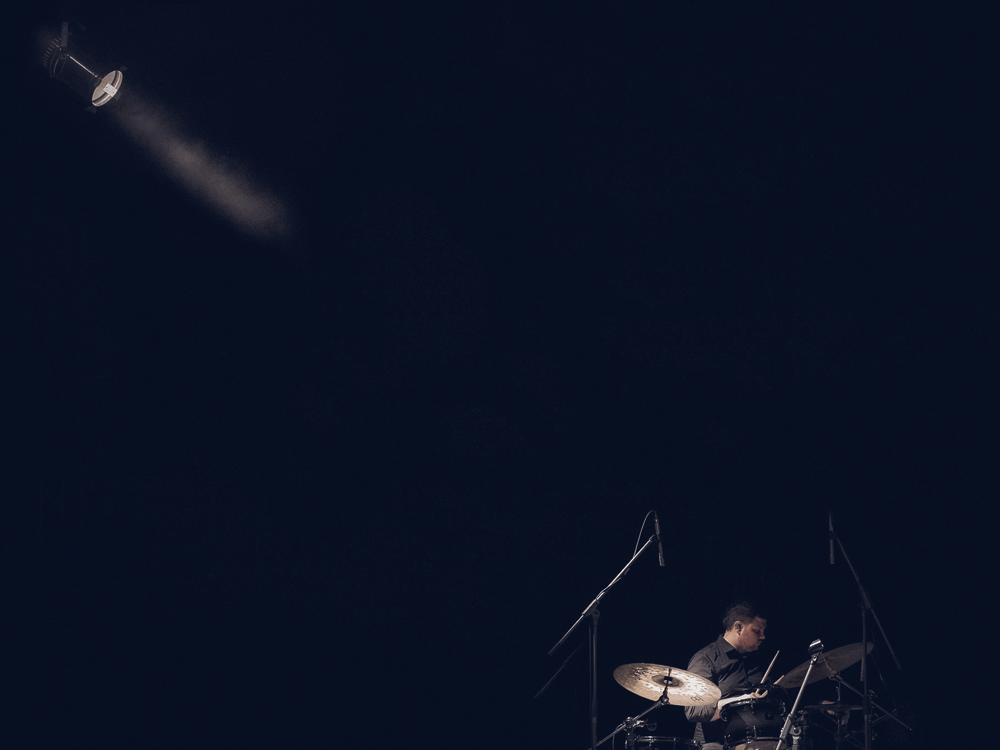
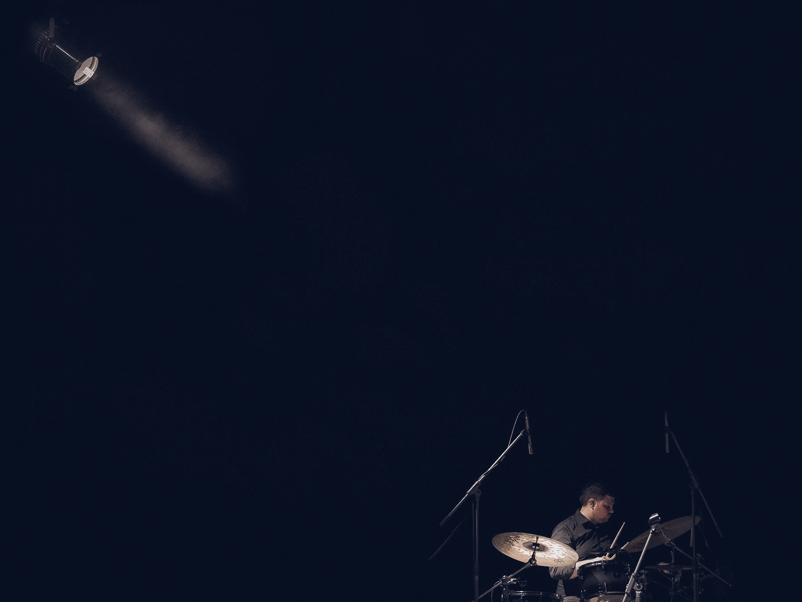

O szkole słów kilka...
 

Drummer Academy jest pierwszą na Lubelszczyźnie szkołą nauki gry na perkusji. Oficjalnie pomysł narodził się w 2021r. I jest odpowiedzią na wzrastające zainteresowanie gry na tym instrumencie i potrzebę profesjonalnego miejsca, które zapewni kształcenie na najwyższym poziomie. Jestem zawodowym nauczycielem gry na perkusji od ponad 12 lat i opracowałem autorski program kształcenia dostosowany do potrzeb każdego ucznia. Staram się przekazywać wiedzę najlepiej jak potrafię, aby była ona przystępna, interesująca a zajęcia efektywne i ciekawe. Uczyłem m.in. w szkołach muzycznych, domach kultury, ogniskach muzycznych.
Przygotowałem z powodzeniem niejednego ucznia do egzaminów wstępnych szkół muzycznych: klasycznych i jazzowych. Podchodzę do każdego ucznia indywidualnie, dostosowując program nauczania do konkretnych potrzeb, gdyż są one różne w zależności od wieku ucznia oraz poziomu zaawansowania. Jestem także czynnym muzykiem z wieloletnim doświadczeniem scenicznym i studyjnym i staram się uwrażliwiać swoich uczniów na muzykę, kreatywność oraz twórczość. Udzielam się w wielu projektach muzycznych i nagraniach oraz współpracowałem z wieloma artystami, m.in.:
Moow mi Janek (MAM TALENT) , Monika Kowalczyk , Katarzyna Góras (MUST BE THE MUSIC/THE VOICE OF POLAND) , Bartek Kawałek (THE VOICE OF POLAND) , Tetris, Flemings, Dali-Dyla, Królewska Orkiestra Symfoniczna , Aneta Dąbska, Sylwia Piotrowska, Couleur Cafe, ChDK Big Band, Helicopters Brass Band, Grzegorz Kloc i wielu innych.
Ciągle doskonalę swój warsztat oraz współpracując z innymi muzykami i perkusistami staram się, aby szkoła oferowała edukację perkusyjną na najwyższym poziomie. Moją osobistą misją i misją szkoły jest kształcenie perkusistów zawodowych oraz niezawodowych pasjonatów gry na tym instrumencie, którzy będą posiadali niezbędną wiedzę i umiejętności pozwalające im na świadome wyrażanie się poprzez ten instrument. Poprzez koncerty, nagrania, pracę nad utworami, warsztaty oraz realizację dźwięku i video, które oferuje szkoła, odkrywam z uczniami wiele obszarów pracy z perkusją. Nie ograniczam się wyłącznie do nauki gry na zestawie, gdyż uważam, że kompletny muzyk – perkusista to taki, który wie jak pracować ze swoim instrumentem w klasie, na scenie, w studiu i w domu, gdyż perkusja, tak jak każdy instrument, potrzebuje szerokiego podejścia i świadomości, aby dobrze brzmieć. Udzielam rad oraz pomagam również dobrać odpowiedni sprzęt do potrzeb ucznia.